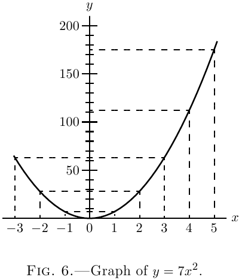

现在，将这些值绘制到合适的比例尺上，我们得到了两个曲线，图 6 和 图 6a。
仔细比较这两个图，并通过检查验证，导出曲线 图 6a 的纵坐标的高度与原始曲线 图 6 在相应的 $x$ 值处的*斜率* 成正比。（参见此处关于曲线*斜率*的内容。）在原点的左侧，原始曲线的斜率为负（即从左到右向下倾斜），导出曲线的相应纵坐标为负。
现在，如果我们回顾一下这里，我们将看到，对 $x^2$ 进行简单微分会得到 $2x$。因此，$7x^2$ 的微分系数是 $x^2$ 的微分系数的 $7$ 倍。如果我们取 $8x^2$，微分系数将是 $x^2$ 的微分系数的八倍。如果我们令 $y = ax^2$，我们将得到
\[
\frac{dy}{dx} = a × 2x.
\]
如果我们从 $y = ax^n$ 开始，我们应该得到 $\dfrac{dy}{dx} = a×nx^{n-1}$。因此，当事物被微分时，任何仅乘以常数的操作都会重新显示为仅乘以常数的操作。而且，对于乘法成立的内容对于*除法*也同样成立：因为，在上面的示例中，如果我们取 $\frac{1}{7}$ 而不是 $7$ 作为常数，我们将在微分后的结果中得到相同的 $\frac{1}{7}$。
*一些其他示例*。
以下进一步的示例，完全解决后，将使您完全掌握应用于普通代数表达式的微分过程，并使您能够自己解决本章末尾给出的示例。
(1) 对 $y = \dfrac{x^5}{7} - \dfrac{3}{5}$ 求微分。
$\dfrac{3}{5}$ 是一个添加的常数，并且消失了（见此处）。
然后我们可以立即写
\[
\frac{dy}{dx} = \frac{1}{7} × 5 × x^{5-1}, \\
\text{或者}\;
\frac{dy}{dx} = \frac{5}{7} x^4.
\]
(2) 对 $y = a\sqrt{x} - \dfrac{1}{2}\sqrt{a}$ 求微分。
项 $\dfrac{1}{2}\sqrt{a}$ 消失，因为它是一个添加的常数；并且由于 $a\sqrt{x}$ 在指数形式中写成 $ax^{\frac{1}{2}}$，我们有
\[
\frac{dy}{dx}
= a × \frac{1}{2} × x^{\frac{1}{2}-1}
= \frac{a}{2} × x^{-\frac{1}{2}}, \\
\text{或者}\;
\frac{dy}{dx} = \frac{a}{2\sqrt{x}}.
\]
(3) 如果 $ay + bx = by - ax + (x+y)\sqrt{a^2 - b^2}$，求 $y$ 对 $x$ 的微分系数。
通常，这种形式的表达式需要比我们目前掌握的知识更多一点；
然而，始终值得尝试该表达式是否可以简化为更简单的形式。
首先，我们必须尝试将其转换为 $y = {}$ 仅包含 $x$ 的表达式的形式。
该表达式可以写成
\[
(a-b)y + (a + b)x = (x+y) \sqrt{a^2 - b^2}.
\]
平方后，我们得到
\[
(a-b)^2 y^2 + (a + b)^2 x^2 + 2(a+b)(a-b)xy = (x^2+y^2+2xy)(a^2-b^2),
\]
简化为
\begin{align*}
(a-b)^2y^2 + (a+b)^2 x^2 &= x^2(a^2 - b^2) + y^2(a^2 - b^2); \\
\text{ 或者}\;
[(a-b)^2 - (a^2 - b^2)]y^2 &= [(a^2 - b^2) - (a+b)^2]x^2, \\
\text{ 即}\;
2b(b-a)y^2 &= -2b(b+a)x^2;
\end{align*}
因此
\[
y = \sqrt{\frac{a+b}{a-b}} x \quad\text{和}\quad \frac{dy}{dx} = \sqrt{\frac{a+b}{a-b}}.
\]
(4) 半径为 $r$，高度为 $h$ 的圆柱体的体积由公式 $V = \pi r^2 h$ 给出。求当 $r = 5.5$ 英寸且 $h=20$ 英寸时，体积随半径变化的变化率。如果 $r = h$，找到圆柱体的尺寸，使得半径的 $1$ 英寸变化导致体积变化 $400$ 立方英寸。
$V$ 关于 $r$ 的变化率是
\[
\frac{dV}{dr} = 2 \pi r h.
\]
如果 $r = 5.5$ 英寸且 $h=20$ 英寸，则该值变为 $690.8$。这意味着半径变化 $1$ 英寸将导致体积变化 $690.8$ 立方英寸。这很容易验证，因为 $r = 5$ 和 $r = 6$ 的体积
分别为 $1570$ 立方英寸和 $2260.8$ 立方英寸，并且 $2260.8 - 1570 = 690.8$。
此外，如果
\[
r=h,\quad \dfrac{dV}{dr} = 2\pi r^2 = 400\quad \text{并且}\quad r = h = \sqrt{\dfrac{400}{2\pi}} = 7.98 \text{英寸}.
\]
(5) Féry 的辐射高温计的读数 $\theta$ 与被观测物体的摄氏温度 $t$ 的关系为
\[
\dfrac{\theta}{\theta_1} = \left(\dfrac{t}{t_1}\right)^4,
\]
其中 $\theta_1$ 是与被观测物体的已知温度 $t_1$ 相对应的读数。
比较温度为 $800°$C、$1000°$C、$1200°$C 时高温计的灵敏度，给定当温度为 $1000°$C 时其读数为 $25$。
灵敏度是读数随温度变化的变化率，即 $\dfrac{d\theta}{dt}$。该公式可以写成
\[
\theta = \dfrac{\theta_1}{t_1^4} t^4 = \dfrac{25t^4}{1000^4},
\]
我们有
\[
\dfrac{d\theta}{dt} = \dfrac{100t^3}{1000^4} = \dfrac{t^3}{10,000,000,000}.
\]
当 $t=800$、$1000$ 和 $1200$ 时，我们分别得到 $\dfrac{d\theta}{dt} = 0.0512$、$0.1$ 和 $0.1728$。
从 $800°$ 到 $1000°$，灵敏度大约翻了一番，并且到 $1200°$ 时，灵敏度又增加了四分之三。
对以下各项求微分：
[2]
(1) $y = ax^3 + 6$。
(2) $y = 13x^{\frac{3}{2}} - c$。
(3) $y = 12x^{\frac{1}{2}} + c^{\frac{1}{2}}$。
(4) $y = c^{\frac{1}{2}} x^{\frac{1}{2}}$。
(5) $u = \dfrac{az^n - 1}{c}$。
(6) $y = 1.18t^2 + 22.4$。
自己编写一些其他示例，并尝试对它们进行微分。
(7) 如果 $l_t$ 和 $l_0$ 分别是铁棒在温度 $t°$ C. 和 $0°$ C. 时的长度，则 $l_t = l_0(1 + 0.000012t)$。求每摄氏度的铁棒长度变化量。
(8) 已经发现，如果 $c$ 是白炽灯的烛光强度，$V$ 是电压，$c = aV^b$，其中 $a$ 和 $b$ 是常数。
求烛光强度随电压的变化率，并计算电压分别为 $80$、$100$ 和 $120$ 伏时，对于 $a = 0.5×10^{-10}$ 和 $b=6$ 的灯泡，每伏电压的烛光强度变化。
(9) 直径为 $D$，长度为 $L$，比重为 $\sigma$ 的弦以力 $T$ 拉伸时的振动频率 $n$ 由下式给出
\[
n = \dfrac{1}{DL} \sqrt{\dfrac{gT}{\pi\sigma}}.
\]
求当 $D$、$L$、$\sigma$ 和 $T$ 单独变化时，频率的变化率。
(10) 管子在不坍塌的情况下可以承受的最大外部压力 $P$ 由下式给出
\[
P = \left(\dfrac{2E}{1-\sigma^2}\right) \dfrac{t^3}{D^3},
\]
其中 $E$ 和 $\sigma$ 是常数，$t$ 是管子的厚度，$D$ 是它的直径。（此公式假设 $4t$ 与 $D$ 相比很小。）
比较当厚度发生小变化和直径发生小变化时（分别发生）$P$ 的变化率。
(11) 从第一原理出发，求以下各项随半径变化的变化率：
( *a* ) - 半径为 $r$ 的圆的周长；
( *b* ) - 半径为 $r$ 的圆的面积；
( *c* ) - 斜边尺寸为 $l$ 的锥体的侧面积；
( *d* ) - 半径为 $r$，高度为 $h$ 的锥体的体积；
( *e* ) - 半径为 $r$ 的球体的面积；
( *f* ) - 半径为 $r$ 的球体的体积。
(12) 铁棒在温度 $T$ 时的长度 $L$ 由 $L = l_t\bigl[1 + 0.000012(T-t)\bigr]$ 给出，其中 $l_t$ 是温度 $t$ 时的长度，求当温度 $T$ 变化时，适合收缩在轮子上的铁轮毂的直径 $D$ 的变化率。
(1) $\dfrac{dy}{dx} = 3ax^2$。
(2) $\dfrac{dy}{dx} = 13 × \frac{3}{2}x^{\frac{1}{2}}$。
(3) $\dfrac{dy}{dx} = 6x^{-\frac{1}{2}}$。
(4) $\dfrac{dy}{dx} = \dfrac{1}{2}c^{\frac{1}{2}} x^{-\frac{1}{2}}$。
(5) $\dfrac{du}{dz} = \dfrac{an}{c} z^{n-1}$。
(6) $\dfrac{dy}{dt} = 2.36t$。
(7) $\dfrac{dl_t}{dt} = 0.000012×l_0$。
(8) $\dfrac{dC}{dV} = abV^{b-1}$，分别为每伏电压 $0.98$、$3.00$ 和 $7.47$ 烛光强度。
(9) \[
\dfrac{dn}{dD} = -\dfrac{1}{LD^2} \sqrt{\dfrac{gT}{\pi \sigma}},
\dfrac{dn}{dL} = -\dfrac{1}{DL^2} \sqrt{\dfrac{gT}{\pi \sigma}}, \\
\dfrac{dn}{d \sigma}
= -\dfrac{1}{2DL} \sqrt{\dfrac{gT}{\pi \sigma^3}},
\dfrac{dn}{dT} = \dfrac{1}{2DL} \sqrt{\dfrac{g}{\pi \sigma T}}.
\]
(10) \[
\dfrac{\text{$P$ 在 $t$ 变化时的变化率}}
{\text{$P$ 在 $D$ 变化时的变化率}}
= - \dfrac{D}{t}
\]
(11) $2\pi$, $2\pi r$, $\pi l$, $\frac{2}{3}\pi rh$, $8\pi r$, $4\pi r^2$。
(12) $\dfrac{dD}{dT} = \dfrac{0.000012l_t}{\pi}$。

练习 II
答案
下一页 →
主页 ↑